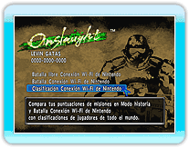
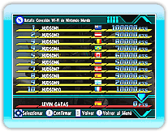

18 |
Clasific. Conexión Wi-Fi de Nintendo |
 |
|
Los resultados de las misiones en Modo historia y en Batalla Conexión Wi-Fi de Nintendo son registrados en las clasificaciones Conexión Wi-Fi de Nintendo, lo que te permite competir por las máximas puntuaciones con jugadores de todo el mundo.
Hay 3 tipos de clasificaciones: Mundial, Regional y Amigos. Las clasificaciones te permiten ver no sólo las clasificaciones de jugadores de todo el mundo sino también la posición de tu propia puntuación. * Para registrarte en la clasificación Conexión Wi-Fi de Nintendo, tienes que crear un archivo de datos guardados.
Cuando selecciones "Clasificación Conexión Wi-Fi de Nintendo" en la "Conexión Wi-Fi de Nintendo", tus resultados serán registrados automáticamente en las clasificaciones Conexión Wi-Fi de Nintendo.
*

Selecciona "Clasificación Conexión Wi-Fi de Nintendo" en la "Conexión Wi-Fi de Nintendo", luego elige los parámetros de las
clasificaciones que quieres ver. Finalmente, selecciona "Máximas puntuaciones" o "Puntuación del jugador" para mostrar las clasificaciones.
*
*
|
 |
 |
 |